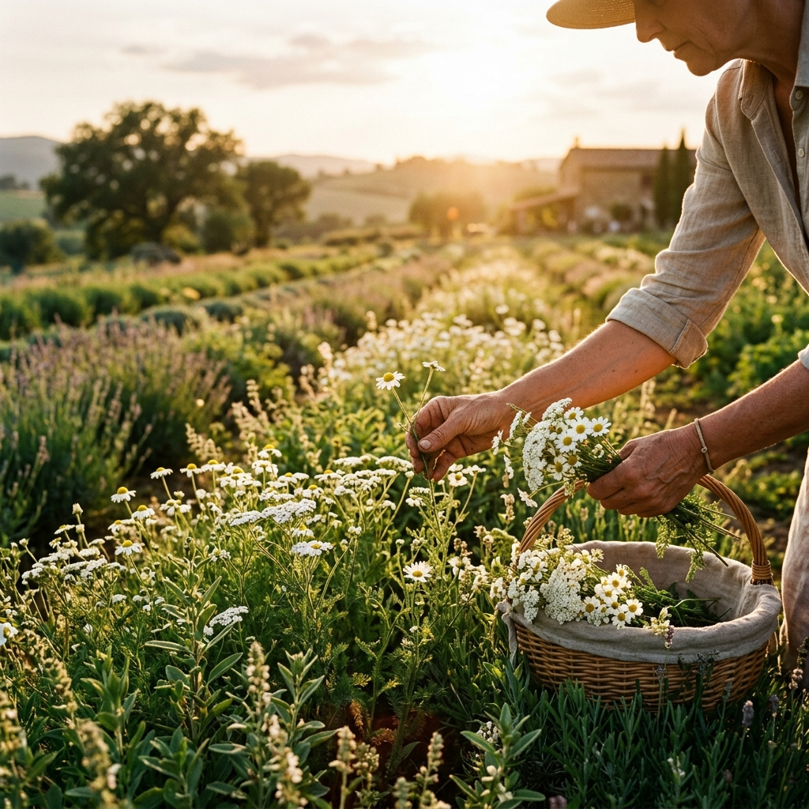
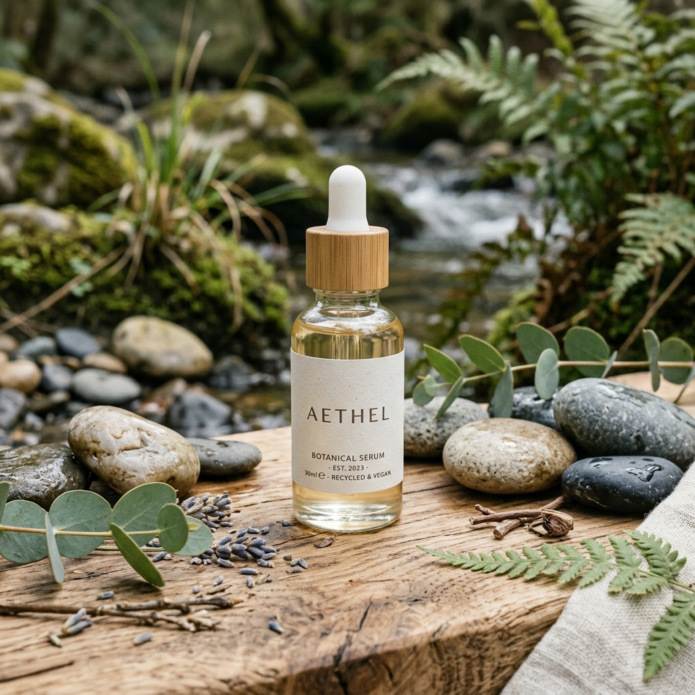

Beauté Responsable
Pour vous et la planète, nous nous engageons toujours plus, toujours mieux. Pour une beauté toujours plus responsable et engagée.
Prendre soin des personnes
L'écoute est au cœur de notre philosophie. KATUISCIA s'engage à vous orienter pour vous sentir bien dans votre corps et confiante dans votre beauté.
Qualité & sécurité : Gage de qualité et de traçabilité, nos formules de soin sont conçues et fabriquées avec les plus hauts standards d'exigence, respectant votre peau et votre bien-être.
Nos collaborateurs : Aujourd'hui comme hier, nos collaborateurs sont notre atout principal. Ils partagent cette quête collective de générosité et de perfection propre à notre marque.

Prendre soin de la planète
Prendre soin de la planète suppose avant tout de réduire l'impact environnemental de notre activité. KATUISCIA s'engage à réduire ses émissions carbone et à protéger notre environnement précieux.
Nous sélectionnons chaque ingrédient pour son efficacité et dans le respect de son écosystème d'origine. Notre objectif est de privilégier l'agriculture respectueuse de la nature, avec un maximum d'extraits de plantes bio.

"L'agriculture durable est celle qui protège la nature et les femmes et les hommes qui la cultivent."Découvrir l'emballage durable